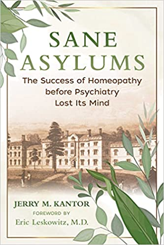

Sane Asylums: The Success of Homeopathy before Psychiatry Lost Its Mind
by Jerry M. Kantor, L.Ac., CCH, MMHS
Item # KANSAN
This is a truly REMARKABLE book of medical history that will blow your mind…and will teach you that medical science does not “follow the science” but instead, it too often “follows the money.”
This book:
• Examines the success of homeopathic psychiatric asylums in the United States from the 1870s until 1920
• Focuses on New York’s Middletown State Homeopathic Hospital for the Insane, which had a treatment regime with thousands of successful outcomes
• Details a homeopathic blueprint for treating mental disorders based on Talcott’s methods, including nutrition and side-effect-free homeopathic prescriptions
In the late 1800s and early 1900s, homeopathy was popular across all classes of society. In the United States, there were more than 100 homeopathic hospitals, more than 1,000 homeopathic pharmacies, and 22 homeopathic medical schools. In particular, homeopathic psychiatry flourished from the 1870s to the 1930s, with thousands of documented successful outcomes in treating mental illness.
Revealing the astonishing but suppressed history of homeopathic psychiatry, Jerry M. Kantor examines the success of homeopathic psychiatric asylums in America from the post–Civil War era until 1920, including how the madness of Mary Todd Lincoln was effectively treated with homeopathy at a “sane” asylum in Illinois. He focuses in particular on New York’s Middletown State Homeopathic Hospital, where superintendent Selden Talcott oversaw a compassionate and holistic treatment regime that married Thomas Kirkbride’s moral treatment principles to homeopathy. Kantor reveals how homeopathy was pushed aside by pharmaceuticals, which often caused more harm than good, as well as how the current critical attitude toward homeopathy has distorted the historical record.
Offering a vision of mental health care for the future predicated on a model that flourished for half a century, Kantor shows how we can improve the care and treatment of the mentally ill and stop the exponential growth of terminal mental disorder diagnoses that are rampant today.
Reviews
“Sane Asylums is a brilliant stroll through medical history, showing that homeopathic physicians were more than a hundred years ahead of their time. The homeopathic mental health institutions were truly sane asylums; that is, they integrated homeopathic treatment with nutritional therapy, physical exercise, play therapy, and respectful and caring personalized treatment. In terms of mental health care, we can now say that there really were the ‘good old days’ in this medical specialty.” ― Dana Ullman, MPH, CCH, author of The Homeopathic Revolution
“Mental health professionals and patients alike can take heart from this thoroughly documented description of natural cures for mental illness at the turn of the last century. The actual cures came from the timeless science of homeopathy, whose safe and effective medicines remain in use today. In fact, we can still implement the same protocols that Jerry Kantor describes in Sane Asylums, complete with specific medicines for common diagnoses. Both scholarly and entertaining, Sane Asylums provides solid support for a more sane approach to mental illness today.” ― Burke Lennihan, RN, CCH, classical homeopath and author of Your Natural Medicine Cabinet
“In Sane Asylums, Jerry Kantor digs into the past to reveal a surprising history, one that challenges current societal beliefs. The most joyful chapter in this book tells of ‘baseball therapy’ practiced at Middletown State Homeopathic Hospital for the Insane, with the Asylums, as the hospital’s team was known, posting a surprisingly good record in competition with other local New York baseball teams. You read this and can’t help but ask yourself, what does this reveal about our mental health care today?” ― Robert Whitaker, author of Mad in America
“Jerry Kantor’s book is an amazing historical document that also provides insight into what can be done to improve the lives of those struggling with mental illness today. Homeopathy can work miracles. It is imperative that more people realize this at a time when modern medicine is increasingly harming rather than helping us.” ― Amy L. Lansky, Ph.D., author of Impossible Cure: The Promise of Homeopathy
“Sane Asylums gives us an illuminating look into a time when visionary doctors treated mental illness with care, compassion, and gentle, effective homeopathic remedies. It is an important historical addition that will enlighten therapists as well as anyone interested in improving the treatment of those with severe mental illness. One can only hope that this history becomes better known so that all effective treatments, such as homeopathy, will flourish.” ― Jane Tara Cicchetti, CCH, author of Dreams, Symbols, and Homeopathy
“Sane Asylums is a book that makes you want to travel back in time and go to 1875–1925 when mental asylums in the United States offered humane living conditions, compassionate care, sports therapy, and homeopathic remedies to thousands of people with mental illness and obtained successful cures. Sane Asylums shows what was possible back then and what can be achieved today if the homeopathic approach to mental illness is made available again and we, as a society, learn to invest in sanity.” ― Vatsala Sperling, Ph.D., P.D.Hom, CCH, R.S.Hom, classical homeopath and author of The Ayurvedic Rese
“Highly recommended. Sane Asylums is an engaging, well-researched, and very much needed historical perspective on the role of homeopathy in the evolution of medicine in the United States. Rather than the ‘scrubbed’ historical version we are accustomed to finding in our history books, Sane Asylums sheds new light on homeopathy’s relevance for mental health care, medicine, nursing, and politics today. Well worth the read!” ― Ann McKay, RN-BC, CCH, HWNC-BC, homeopath
“In an insane world, what better than to challenge our collective cognitive dissonance around psychiatry? Homeopathy is biological intelligence and inheritance. Seems we knew this once upon a time. ‘Mad’ props to Jerry Kantor for uncovering beautiful, forgotten, misunderstood, and disavowed parts of our medical history.” ― Louise Kuo, health freedom activist and author of Vaccine Epidemic
“Do you like history, homeopathic history? Well then, you’re sure to appreciate Jerry Kantor’s inspiring scholarship in this psychological thriller. And what’s most unsettling is that it’s all true!” ― Jay Yasgur, author of Yasgur’s Homeopathic Dictionary and Holistic Health Reference
About the Author
|
|
|
|

|

|
|
|

|
|
|
|
More from Bestselling Books